STA 9890 - Unsupervised Learning: II. Clustering
\[\newcommand{\R}{\mathbb{R}} \newcommand{\E}{\mathbb{E}} \newcommand{\V}{\mathbb{V}} \newcommand{\P}{\mathbb{P}} \newcommand{\C}{\mathbb{C}} \newcommand{\bbeta}{\mathbb{\beta}} \newcommand{\bone}{\mathbb{1}} \newcommand{\bzero}{\mathbb{0}} \newcommand{\ba}{\mathbf{a}} \newcommand{\bb}{\mathbf{b}} \newcommand{\bc}{\mathbf{c}} \newcommand{\br}{\mathbf{r}} \newcommand{\bw}{\mathbf{w}} \newcommand{\bx}{\mathbf{x}} \newcommand{\by}{\mathbf{y}} \newcommand{\bz}{\mathbf{z}} \newcommand{\bX}{\mathbf{X}} \newcommand{\bA}{\mathbf{A}} \newcommand{\bB}{\mathbf{B}} \newcommand{\bC}{\mathbf{C}} \newcommand{\bD}{\mathbf{D}} \newcommand{\bu}{\mathbf{u}} \newcommand{\bU}{\mathbf{U}} \newcommand{\bV}{\mathbf{V}} \newcommand{\bI}{\mathbf{I}} \newcommand{\bH}{\mathbf{H}} \newcommand{\bW}{\mathbf{W}} \newcommand{\bK}{\mathbf{K}} \newcommand{\argmin}{\text{arg\,min}} \newcommand{\argmax}{\text{arg\,max}} \newcommand{\MSE}{\text{MSE}} \newcommand{\Fcal}{\mathcal{F}} \newcommand{\Dcal}{\mathcal{D}} \newcommand{\Ycal}{\mathcal{Y}} \]
For our first topic in unsupervised learning, we turn to clustering, the task of dividing observations into meaningful groups. Before we get to methods, what are some reasons why we might want to perform clustering on a given data set?
-
Simplification of structure: by dividing a complex population into several smaller and more homogeneous subpopulations, we hope to make it easier to understand some underlying phenomenon.
This is common in things like medical studies: rather than dealing with cancer, as a large and undifferentiated phenomenon, we have divided cancers into types and subtypes of related disease. Note that these are certainly not all identical within a type - the random genetic abnormalities caused by excessive UV exposure in my skin aren’t necessarily the same random genetic abnormalities caused by excessive UV exposure in your skin - but they are still much more homogeneous than two totally different cancers, e.g., pancreatic and brain. By recognizing the subgroups, we have a simpler task to understand four or five groups separately than building one “super-model” that covers them all.
Statistically, you can think of this as being a special case of one of our favorite properties of variance:
\[\V[Y | X ] \leq \V[Y] \text{ for any random variables } X, Y\]
but we do not necessarily know the relevant \(X\) a priori. (Compare this to regression, where we typically have a model - often implicit - about \(X\) and the relationship between \(X\) and \(Y\)).
Data compression: when dealing with large data sets, it may be too expensive to treat all points separately. If we can identify repeated (or nearly repeated) points, we combine them and add a weight of “2” to our algorithm, earning us some savings in computational time and in memory usage.
Denoising: when faced with noisy observations, we might get a better of the ‘true’ underlying signal by averaging several similar observations. Obviously, we don’t want to accidentally mix in signals that are fundamentally different, but slight differences might be ok in a “bias-variance” sort of way.
In each of these tasks, we’re faced with a bit of a trade-off in our task:
- If we divide our data into more clusters, we have more homogeneity within the groups, but we get less of the benefits of clustering because we still have more groups to deal with.
- If we divide our data into fewer clusters, we get more simplicity (fewer clusters) but our simplified (clustered) representation is lossier.
In our discussion of clustering, this is the principal “tuning parameter” we will have to wrestle with. (Sometimes this will be an explicit “how many clusters?” hyperparameter, while other times we will have a “how much combining?” parameter which will only implicitly determine the number of clusters when we apply it to a data set.) As discussed last week, there’s not a simple “just holdout”-type heuristic we can use to assess the performance of clustering and our validation strategies typically need to be a bit more problem specific.
CautionThis isn’t Economists’ Clustering
If your regression training had some an economics-flavored background, you may have heard the term clustering used in a regression context, referring to groups of related observations that should be not modeled as independent observations (e.g., standardized test performance of different classes within the same school). This is not that type of clustering!
In that supervised context, we know the underlying group structure and use it to inform our regression modeling. In the unsupervised context we consider, we do not know the underlying group structure (though we assume one exists!) and we instead seek to discover it.
Distance-Based Clustering
We will build up our basic clustering framework from a distance-based perspective. If two points \(\bx_1, \bx_2\) are relatively close (in a distance sense), they are more suitable candidates for clustering than two points \(\bx_3, \bx_4\) which are very far apart. This will not always be the case - if \(\bx_4\) is very far away from anything else, \(\bx_3\) may still be its “nearest-neighbor” - but it gives us a good place to start.
We will begin with clustering based on Euclidean (\(\ell_2\)) distances, but most of the methods we consider can be “kernelized” - allowing for other distances in a feature-expanded space - or “sparsified” - allowing the method to identify and cluster based only on distances in a few relevant features. Because we start with \(\ell_2\) distance, these methods are going to perform their best when applied to data with nice isotropic (circular) structure.
This type of data will be relatively easy to cluster:
Of course, we do not generally get our data so nicely labeled and instead are faced with something like:

While the cluster structure is less clear, a first pass would lead to placing a circle around the
Clearly, if you were to cluster this data, drawing a circle around the group on the left and the group on the right:
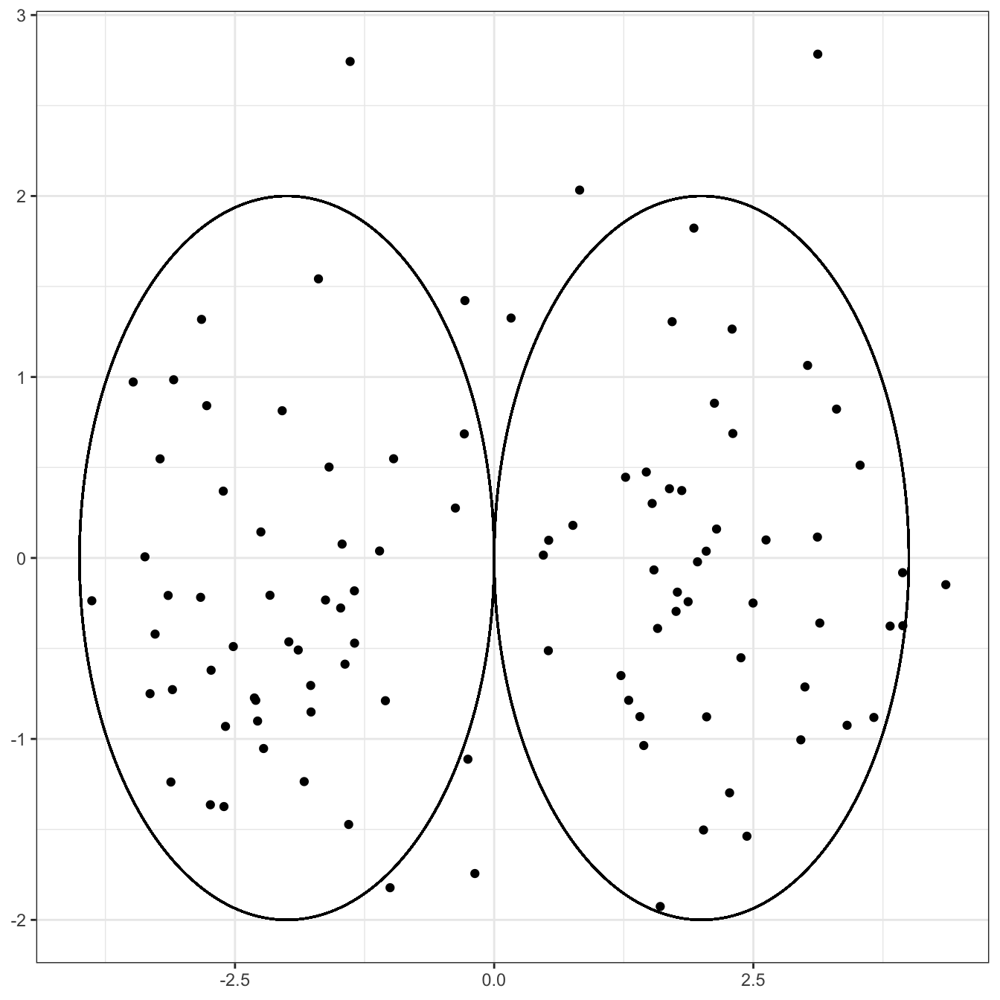
Clearly not a perfect clustering - we have a few uncircled points to deal with and the choice of the radius is debatable - but a darn good first start. Notably, the points in each circle are generally closer to the center of the circle (and hence to each other) than they are to points in the other circle.
Compare this to a situation in which there is strong correlation among the two coordinates, even if the two clusters are still centered in the same place.
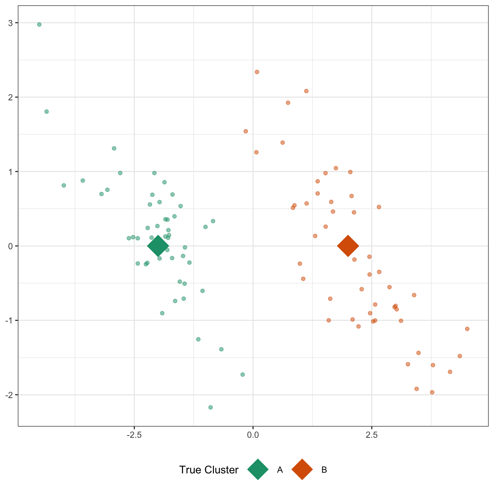
The same “draw a circle” strategy gives us
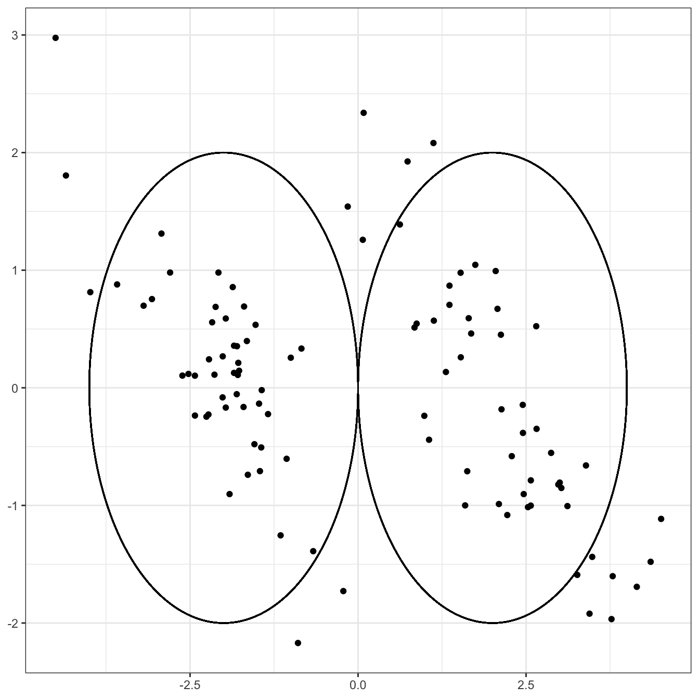
This still isn’t a terrible outcome - it’s just not that hard a problem! - but it’s clearly harder than the previous problem, even though the clusters themselves aren’t any further apart and the variance in each direction isn’t changed. If we were able to represent this data in a more ‘diagonal’ way that captured the structures of each cluster, we might do better. (Hint, hint: PCA)
With that aside complete, our basic clustering problem is thus:
- Divide all points into one of \(K\) groups
- Minimize the variance within the groups
- Maximize the distance between the groups
Here, we can parameterize each group by its center point (mean), which is known as the centroid.1 We can modify the above to:
- Divide all points into one of \(K\) groups
- Minimize the distance from each point to its nearest centroid
- Maximize the distance between the centroids
So let’s write this as an optimization problem:
\[\argmin_{\substack{c_1, c_2, \dots, c_n \in \{1, 2, \dots, K}\} \\ C_1, C_2, \dots, C_K \in \R^p} \sum_i \|X_i - C_{c_i}\|_2^2\]
That’s a mess! But what does it mean?
- We want to find labels \(c_1, \dots, c_n\). We have one label for each of our \(n\) points and, rather than being arbitrary numbers, we only get to pick the integers \(1\) to \(K\).
- Additionally, we want to estimate \(K\) centroids \(C_1, \dots, C_K\).
- Our objective function is the sum of squared distances from each point \(X_i\) to its corresponding centroid \(C_{c_i}\). For instance, if our third point was mapped to centroid \(2\), the corresponding term in the objective \(\|X_3 - C_2\|_2^2\)
So not too complex once we take it apart, but we will have trouble solving it. Due to the discrete labels \(\{c_i\}\), this is a combinatorial (discrete) problem and we don’t get the convexity magic.
Our first two clustering methods are based on on approximately solving this problem.
The \(K\)-Means Model
Returning to our problem above, while it is hard to solve the problem as written, we can break it into two relatively simple problems:
- If we know the centroids, it’s easy to determine the closest centroid for each point
- If we know the cluster labels, we can estimate the corresponding centroids by averaging all the points in the cluster.
Putting these together, we get a pretty great clustering algorithm. We start with a guess of either the labels and then we iteratively update the centroids and labels, using our answer from the previous label update to get better centroids and then using our latest centroids to get better labels. We run this process until the labels stop changing (which implies the centroids stop changing) and we have a pretty good guess as to our clustering.
Let’s see this in action. I’m going to generate data with three clusters. These will be visually apparent so you can see the algorithm in action.
D <- data.frame(c = rep(c("A", "B", "C"), each=40)) |>
mutate(r = 1,
theta = recode_values(c, "A" ~ 0, "B" ~ 2*pi/3, "C" ~ 4*pi/3),
z_mean = r * exp((0 + 1i) * theta),
x_mean = Re(z_mean),
y_mean = Im(z_mean),
x = rnorm(n(), mean=x_mean, sd=0.75),
y = rnorm(n(), mean=y_mean, sd=0.75),
id = row_number())
ggplot(D, aes(x=x, y=y)) +
geom_point() +
theme_bw()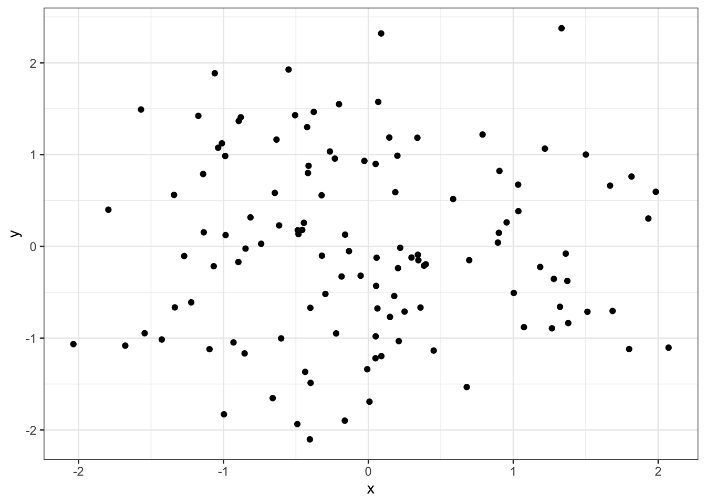
We see three pretty clear clusters, with a few possibly ambiguous points. To start our algorithm, let’s randomly assign each point to one of three clusters, indicated by colors:

Obviously, by doing this randomly, we’re not going to do well. But with these clusters, we can now estimate cluster centroids by taking the average of all points of that color:
D <- D |>
group_by(c_hat) |>
mutate(x_centroid = mean(x),
y_centroid = mean(y)) |>
ungroup()
ggplot(D) +
geom_point(aes(x=x, y=y, color=c_hat), alpha=0.5) +
geom_point(aes(x=x_centroid, y=y_centroid, color=c_hat), pch=12, size=3) +
theme_bw() +
scale_color_brewer(type="qual",
palette=2,
name="Initial Guessed Clusters")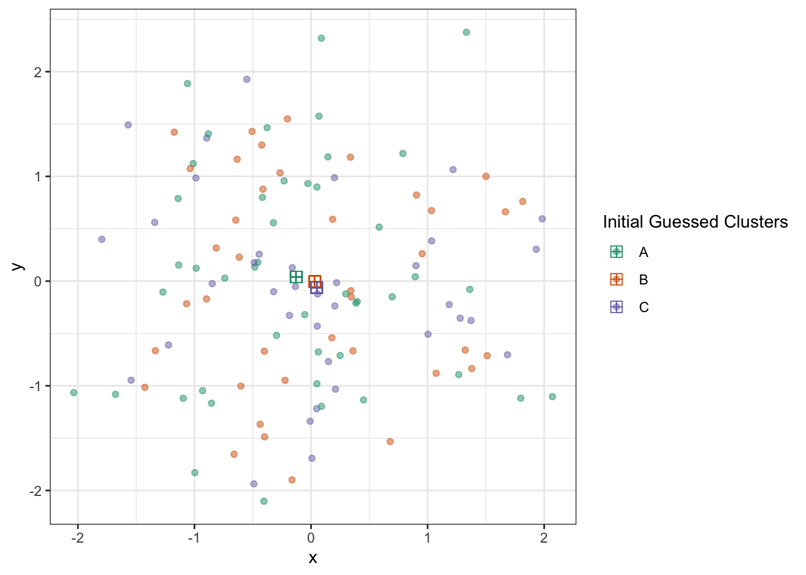
With these, we get to update our cluster estimates:
D1 <- D |> select(-c_hat, -x_centroid, -y_centroid)
D2 <- D |> select(c_hat, x_centroid, y_centroid) |> distinct()
D <- cross_join(D1, D2) |>
mutate(dist_to_centroid = (x - x_centroid)^2 + (y - y_centroid)^2) |>
group_by(id) |>
slice_min(dist_to_centroid) |>
ungroup() |>
select(-ends_with("centroid"))
ggplot(D) +
geom_point(aes(x=x, y=y, color=c_hat)) +
theme_bw() +
scale_color_brewer(type="qual",
palette=2,
name="Guessed Clusters - 1 Round")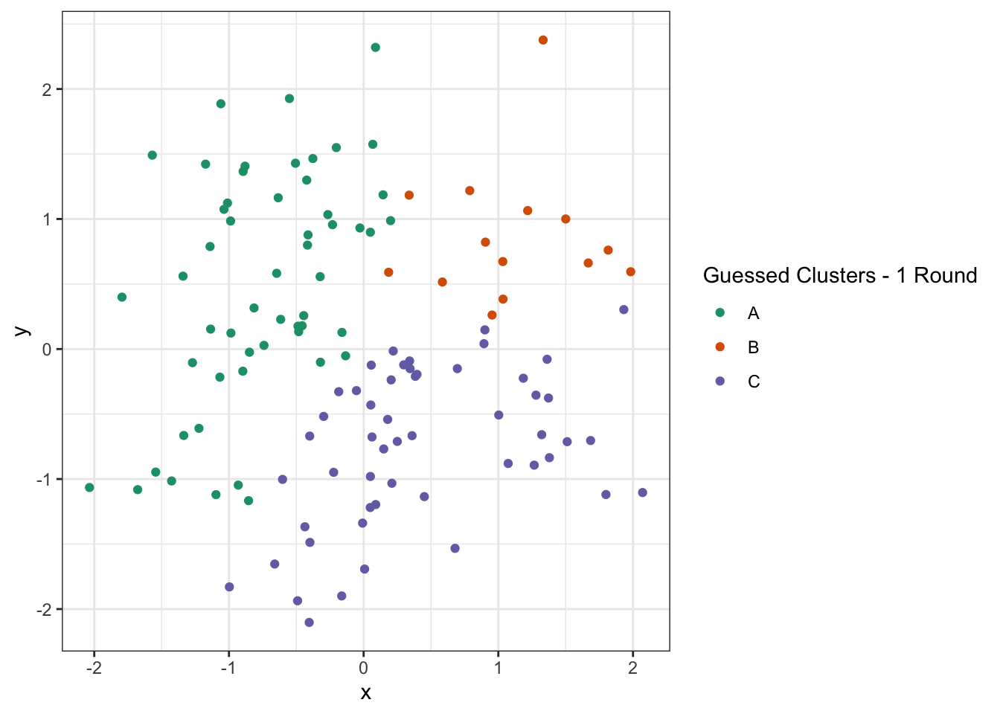
Not perfect, but much improved! From here, we again get new estimated centroids and plot them:
D <- D |>
group_by(c_hat) |>
mutate(x_centroid = mean(x),
y_centroid = mean(y)) |>
ungroup()
ggplot(D) +
geom_point(aes(x=x, y=y, color=c_hat), alpha=0.5) +
geom_point(aes(x=x_centroid, y=y_centroid, color=c_hat), pch=12, size=3) +
theme_bw() +
scale_color_brewer(type="qual",
palette=2,
name="Guessed Clusters - 1 Round")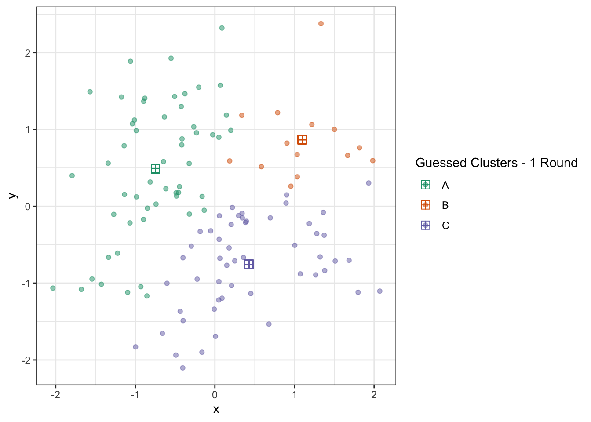
We can repeat this process a few times and see that the algorithm converges quickly:
D1 <- D |> select(-c_hat, -x_centroid, -y_centroid)
D2 <- D |> select(c_hat, x_centroid, y_centroid) |> distinct()
D <- cross_join(D1, D2) |>
mutate(dist_to_centroid = (x - x_centroid)^2 + (y - y_centroid)^2) |>
group_by(id) |>
slice_min(dist_to_centroid) |>
ungroup() |>
select(-ends_with("centroid")) |>
group_by(c_hat) |>
mutate(x_centroid = mean(x),
y_centroid = mean(y)) |>
ungroup()
ggplot(D) +
geom_point(aes(x=x, y=y, color=c_hat), alpha=0.5) +
geom_point(aes(x=x_centroid, y=y_centroid, color=c_hat), pch=12, size=3) +
theme_bw() +
scale_color_brewer(type="qual",
palette=2,
name="Guessed Clusters - 2 Rounds")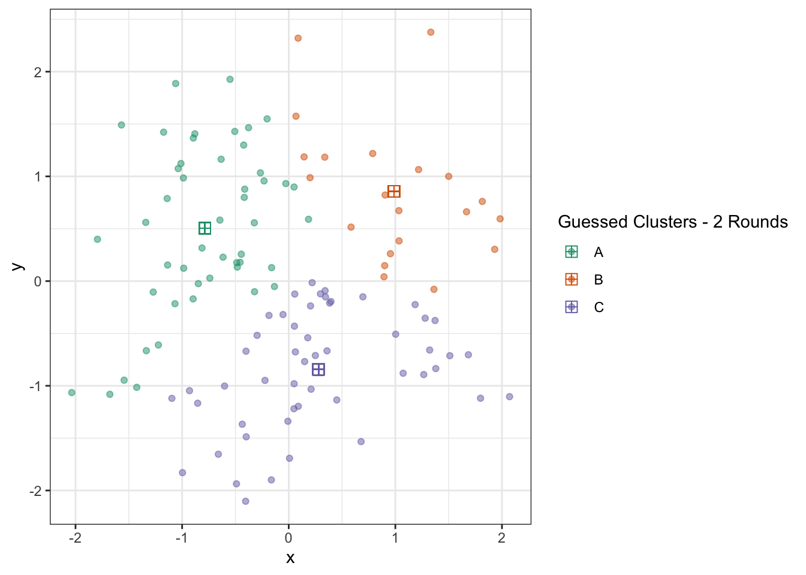
D1 <- D |> select(-c_hat, -x_centroid, -y_centroid)
D2 <- D |> select(c_hat, x_centroid, y_centroid) |> distinct()
D <- cross_join(D1, D2) |>
mutate(dist_to_centroid = (x - x_centroid)^2 + (y - y_centroid)^2) |>
group_by(id) |>
slice_min(dist_to_centroid) |>
ungroup() |>
select(-ends_with("centroid")) |>
group_by(c_hat) |>
mutate(x_centroid = mean(x),
y_centroid = mean(y)) |>
ungroup()
ggplot(D) +
geom_point(aes(x=x, y=y, color=c_hat), alpha=0.5) +
geom_point(aes(x=x_centroid, y=y_centroid, color=c_hat), pch=12, size=3) +
theme_bw() +
scale_color_brewer(type="qual",
palette=2,
name="Guessed Clusters - 3 Rounds")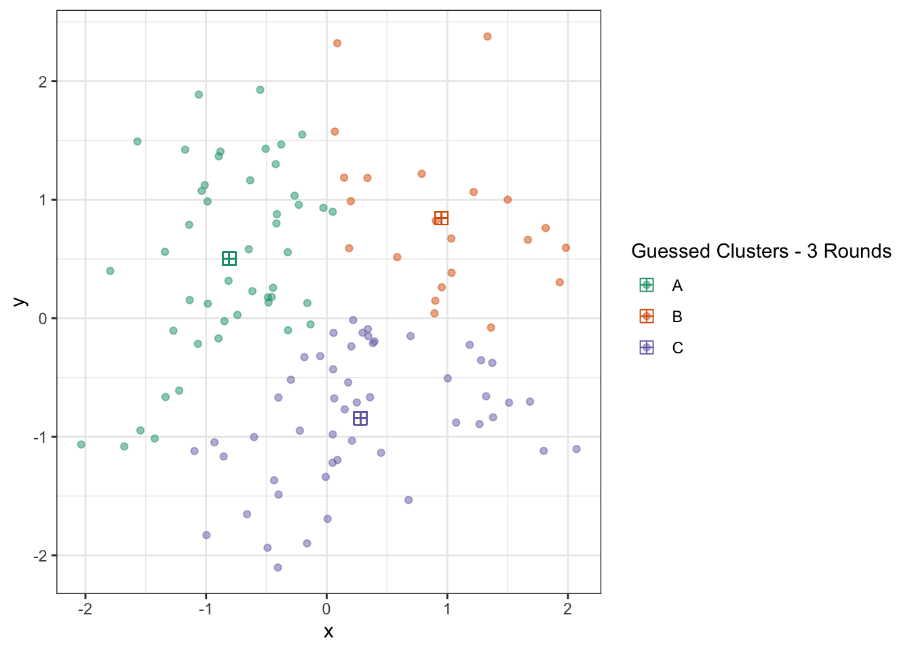
D1 <- D |> select(-c_hat, -x_centroid, -y_centroid)
D2 <- D |> select(c_hat, x_centroid, y_centroid) |> distinct()
D <- cross_join(D1, D2) |>
mutate(dist_to_centroid = (x - x_centroid)^2 + (y - y_centroid)^2) |>
group_by(id) |>
slice_min(dist_to_centroid) |>
ungroup() |>
select(-ends_with("centroid")) |>
group_by(c_hat) |>
mutate(x_centroid = mean(x),
y_centroid = mean(y)) |>
ungroup()
ggplot(D) +
geom_point(aes(x=x, y=y, color=c_hat), alpha=0.5) +
geom_point(aes(x=x_centroid, y=y_centroid, color=c_hat), pch=12, size=3) +
theme_bw() +
scale_color_brewer(type="qual",
palette=2,
name="Guessed Clusters - 4 Rounds")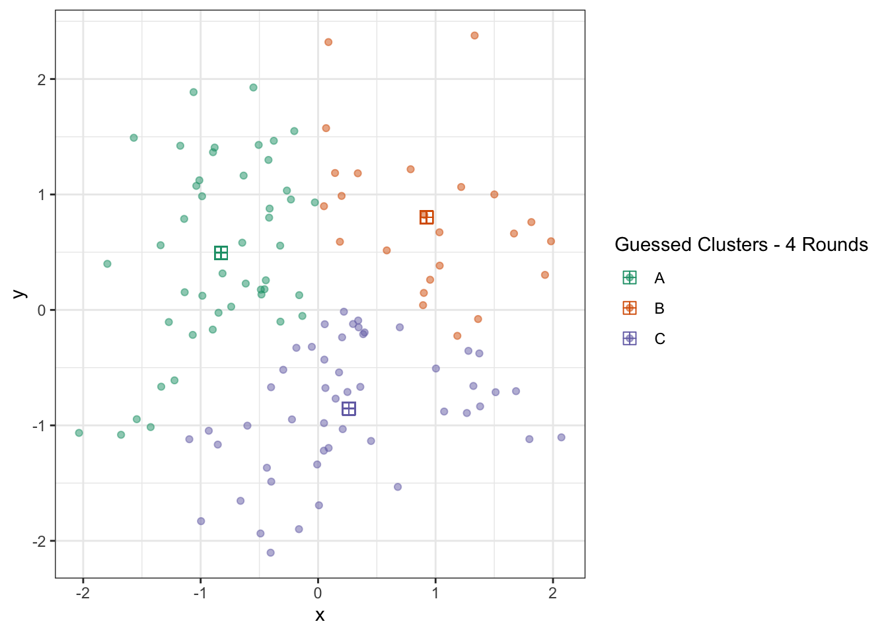
At this point, the algorithm is terminated (since repeating the updates won’t change anything) and we actually have a pretty good result. You could quibble with some points on the boundary, but this is actually pretty impressive if you think back to our starting point just a few iterations earlier.
The algorithm is known as Lloyd’s Algorithm and it solves the so-called “\(K\)-Means” problem (of estimating \(K\) cluster means). Despite its simplicity, it usually converges quite quickly to a reasonable solution. In R, we implement this via the kmeans() function:
Which we visualize as before:
D1 <- D |> select(-c_hat, -x_centroid, -y_centroid)
D |>
select(x, y) |>
as.matrix() |>
kmeans(centers=3) |>
useful::fortify.kmeans() |>
cross_join(D1) |>
mutate(dist_to_centroid = (x - .x)^2 + (y - .y)^2) |>
group_by(id) |>
slice_min(dist_to_centroid) |>
ungroup() |>
select(-ends_with("centroid")) |>
ggplot(aes(color=.Cluster)) +
geom_point(aes(x=x, y=y), alpha=0.5) +
geom_point(aes(x=.x, y=.y), size=3, pch=10) +
theme_bw() +
scale_color_brewer(type="qual",
palette=2,
name="Guessed Clusters - kmeans()")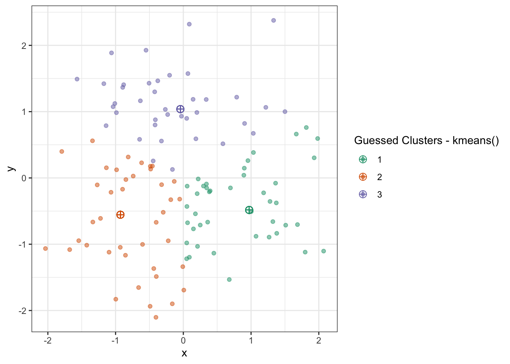
Which is quite nice!
But this actually doesn’t quite match our results from above. What happened?
Lloyd’s Algorithm is sensitive to initialization - with different starting values, we get different final results. (Recall that this can’t happen with convex problems!) To get around this, we typically run \(K\)-means several times with different initial values and pick the best result (defined as the minimum within cluster variance).
D1 <- D |> select(-c_hat, -x_centroid, -y_centroid)
D |>
select(x, y) |>
as.matrix() |>
kmeans(centers=3, nstart = 100) |>
useful::fortify.kmeans() |>
cross_join(D1) |>
mutate(dist_to_centroid = (x - .x)^2 + (y - .y)^2) |>
group_by(id) |>
slice_min(dist_to_centroid) |>
ungroup() |>
select(-ends_with("centroid")) |>
ggplot(aes(color=.Cluster)) +
geom_point(aes(x=x, y=y), alpha=0.5) +
geom_point(aes(x=.x, y=.y), size=3, pch=10) +
theme_bw() +
scale_color_brewer(type="qual",
palette=2,
name="Guessed Clusters - kmeans(nstart=100)")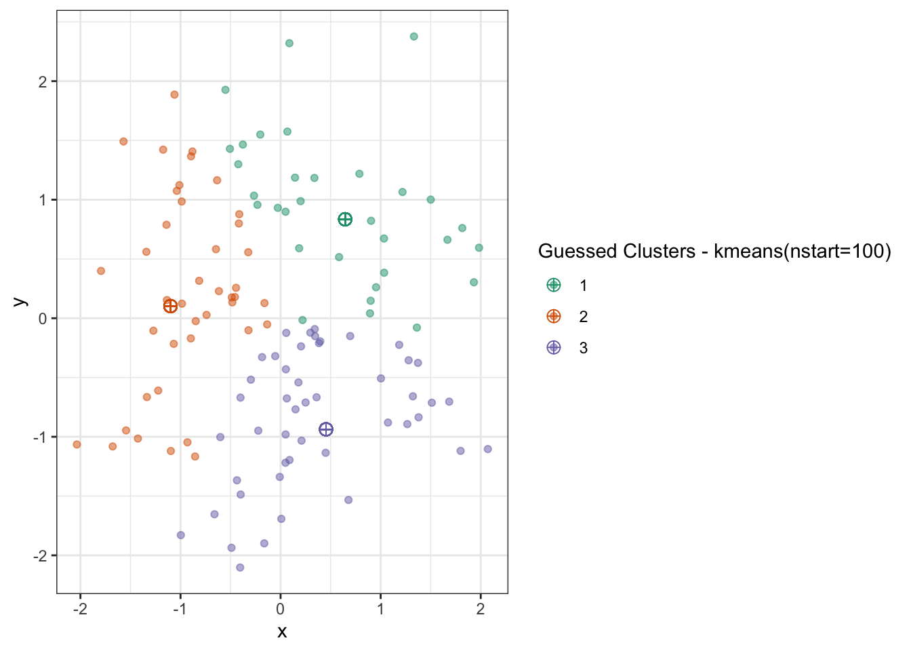
Here, the data is small enough and the algorithm is fast enough we could run it many times and get an improved result.
Note that there are two ways in which the results can differ:
- A “label switching” problem in which cluster “A” is called cluster “B”, but the actual groupings don’t change
- Different groupings, where two points are in the same group in one solution but different groups in a second solution
The first makes for some annoying book-keeping, but is ultimately harmless. The latter is what we worry about when using \(K\)-means.
To get around this, we simply run \(K\)-means with a variety of different initial values and select the ‘best’ result. This is feasible because Lloyd’s Algorithm is so fast (means and distance calculations). In this context, best refers to minimizing the clustering objective we started with: distance from each point to its centroid.
If this feels unsatisfying - and it is a bit unsatisfying - there are some alternate approaches that are more theoretically grounded than “try a lot and pick the best.” Most notable is the “\(k\)-means++` strategy of Arthur and Vassilvitskii2 which uses an alternate initialization and guarantees a result that is”near optimal”. The details can be a bit complicated, but essentially \(k\)-means++ just guarantees that the initial centroids are reasonably well spread out across the data. As a practical matter, I recommend using both \(k\)-means++ and a set of random initializations and choosing the best.
EM Algorithms for Hard and Soft Clustering
Convex Clustering
While greedy approaches (Lloyd’s and EM) work well for clustering, we might still want to explore an analogue to our “best-subsets to lasso” relaxation from the supervised context. Recall that, in the supervised context, we found the “closest convex problem” by relaxing the \(\ell_0\) (best subsets) penalty to the \(\ell_1\) (lasso) penalty. Convex clustering lets us do something similar for the clustering problem.
Recall the clustering problem we used to motivate \(K\)-means:
\[\argmin_{\substack{c_1, c_2, \dots, c_n \in \{1, 2, \dots, K}\} \\ C_1, C_2, \dots, C_K \in \R^p} \sum_i \|X_i - C_{c_i}\|_2^2\]
We don’t have a simple \(\ell_0 \to \ell_1\) substitution we can perform here, so we need to manipulate the problem a bit. After a bit of work, we can convince ourselves that the appropriate convex problem looks like this:
\[\argmin_{\bu_1, \bu_2, \dots \bu_n \in \R^p} \sum_i \|\bx_i - \bu_i\|_2^2 + \lambda \sum_{i, j} \|\bu_i - \bu_j\|_2\]
This is quite a shift, so let’s take this one apart as well:
Instead of having \(n\) labels and \(K\) clusters, we now have \(n\) \(\bu_i\) variables, one per observation \(\bx_i\). These play the role of the estimated centroids for each observation. That is, instead of mapping each point to its cluster label and then to the centroid of that cluster, we simply map each \(\bx_i\) to a new point \(\bu_i\)
We say that \(\bx_i\) and \(\bx_j\) are in the same cluster if their centroids match. This should be consistent with your impression of clustering so far - if two points are in the same \(K\)-means cluster, it means they got assigned to the same centroid. But how do we make that happen? In \(K\)-means, we got ‘repeats’ because we only had \(K \ll n\) distinct clusters; that is not the case here, we have \(n\) individual centroids.
-
To get the ‘repeats’ in the centroids we want, we use a lasso type penalty on the difference of the centroids. Recall that lasso penalties shrink their input to zero, so if \(\bu_i - \bu_j \to 0\), we have \(\bu_i \to \bu_j\), giving us the desired clustering behavior.
This type of penalty (on the difference of points) is sometimes called a fusion penalty since it serves to make things equal: we saw a bit of this in our discussion of non-linear trend-filtering methods.
-
As always, when given a new penalized optimization problem, we can build intuition by thinking about the \(\lambda \to 0\) and \(\lambda \to \infty\) limits:
As \(\lambda \to 0\), the penalty goes away and we have no pressure to fuse points together. As such each \(\bu_i = \bx_i\) and we have no ties. This represents the “no-clustering” extreme end: each point is its own cluster, and the centroid of that cluster is simply its one point.
-
As \(\lambda \to \infty\), the pressure to fuse points together becomes irresistible and all points get joined to a single point, \(\overline{\bu}\). Our optimization problem essentially simplifies to
\[\argmin_{\overline{\bu}} \sum_i \|\bx_i - \overline{\bu}\|_2^2\]
But we know this problem! That’s just the definition of the mean: recall all of our OLS motivation - the mean is the point that minimizes \(\ell_2\) distance. So we fuse all points together into a single ‘mono-cluster’ at the grand mean.
These represent reasonable extremes for the clustering problem. We can actually visualize the results of convex clustering at various \(\lambda\) using something like this:
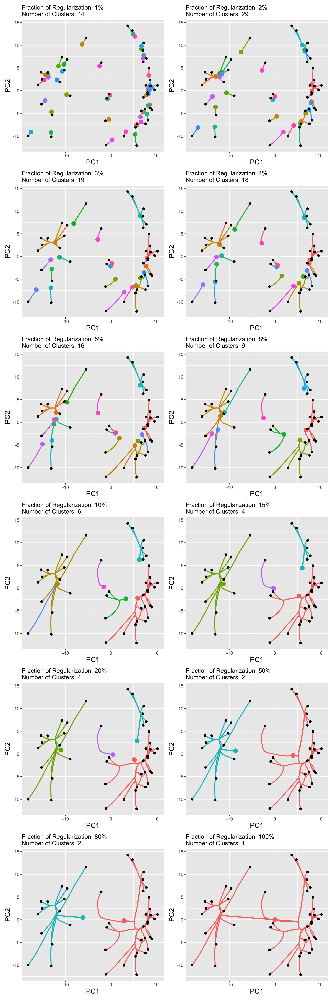
Some of the labels are a bit busy, but we can clearly see the centroids (large points) converging and fusing as \(\lambda\) increases to its maximum meaningful value (her scaled to \(\lambda_{\max} = 100\%\)).
Despite this lovely theoretical formulation and my best efforts on the algorithm development front, convex clustering has not yet taken the world by storm. It’s a fun and theoretically-satisfying formulation - the sort of things that many statistics papers are written about - but you are not likely to encounter it in the wild.
Spectral Clustering
The distance based clustering we have done so far reflects major patterns in distance: two points are unlikely to be clustered together if they are far apart. We can invert this to motivate a type of ‘nearness’ based clustering, in which we want to preserve local nearness and maximize the chance that each point is clustered with its nearest neighbors.
To make this rigorous, we need to discuss a graph embedding of a data set. Given a data set, we represent it as a graph where:
- each node in the graph corresponds to an observation in the original data
- two nodes are connected by an edge if and only if the original points were close
For example, if we have data of the form
nested_circles <- data.frame(group = rep(c("a", "b"), each=48)) |>
mutate(radius = if_else(group == "a", 4, 1),
group_n = row_number(),
group_arg = group_n / max(group_n) * 2 * pi,
z = radius * exp((0 + 1i) * group_arg),
x = rnorm(n(), mean=Re(z), sd=0.2),
y = rnorm(n(), mean=Im(z), sd=0.2),
.by = "group")
ggplot(nested_circles, aes(x=x, y=y)) +
geom_point() +
theme_bw()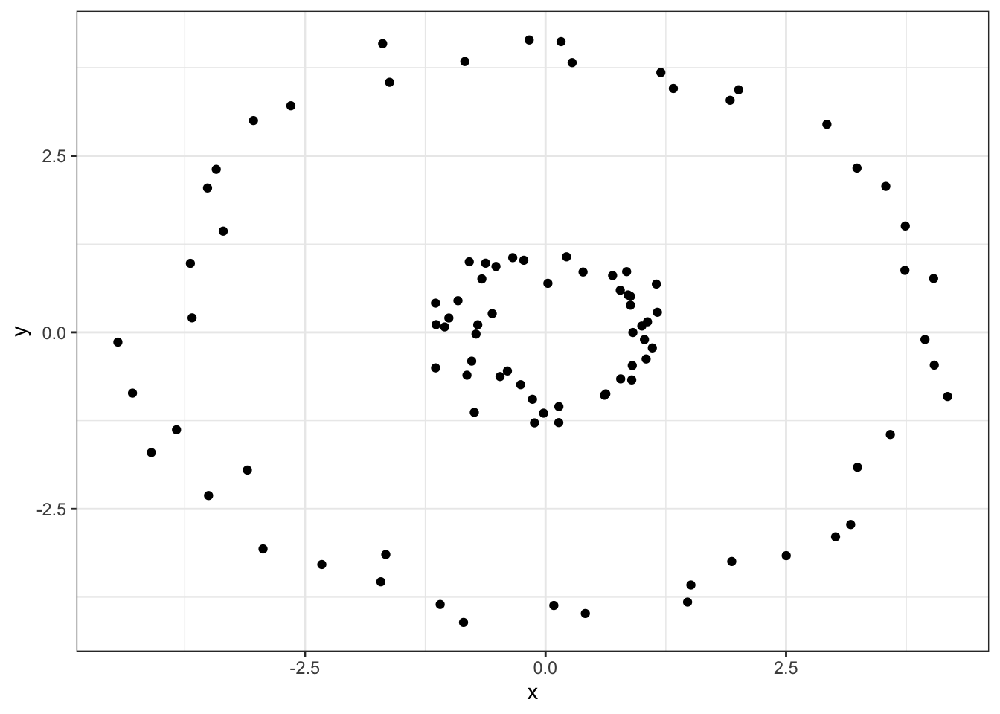
Clearly, this data should be clustered into inner and outer rings, but \(K\)-means fails:
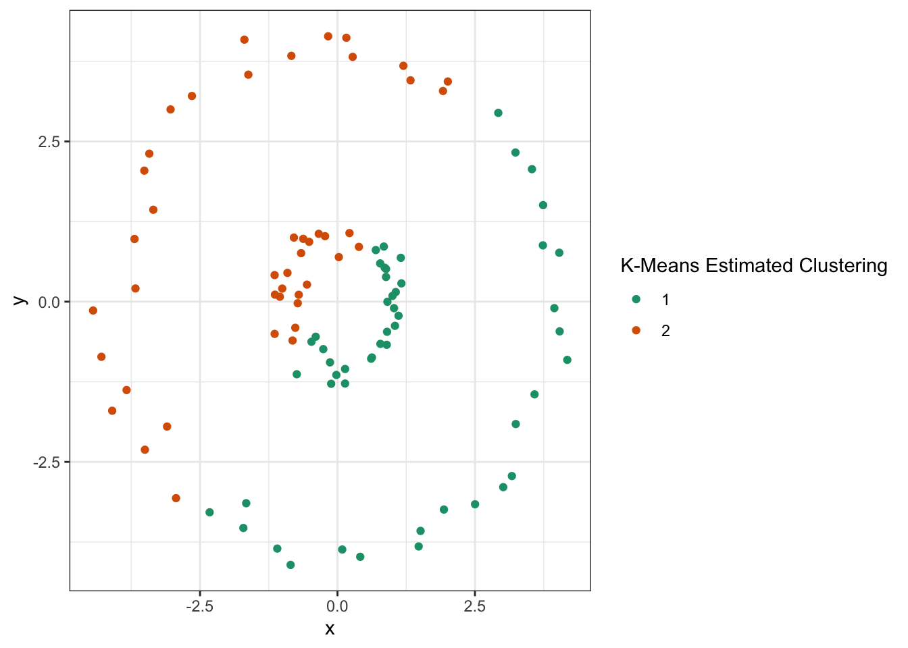
Unsurprisingly, since our clusters are not compact Euclidean balls, \(K\)-means fails terribly here. Let’s construct a graph where each point is connected to three of its nearest neighbors:
library(sf)
library(nngeo)
points <- nested_circles |> select(x, y) |> st_as_sf(coords=c("x", "y"))
# K = 5 because we want three nearest neighbors
# (point 1 will be the original point and 4 others will matter)
neighbor_indices <- st_nn(points, points, k = 5, progress = FALSE)
knn_lines <- st_connect(points, points, ids = neighbor_indices)Calculating nearest IDs
Calculating linesggplot() +
geom_sf(data = knn_lines, color = "steelblue", alpha = 0.5) +
geom_sf(data = points, size = 2) +
theme_bw() +
ggtitle("K-Nearest Neighbor Graph (K=4)")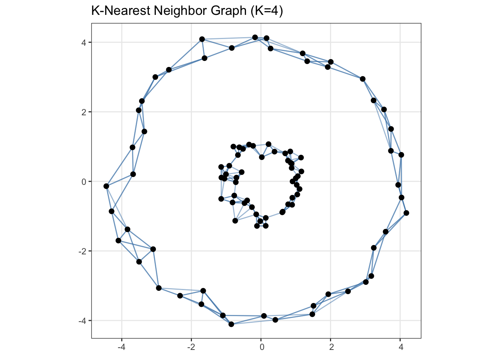
Clearly, if we were to chop this graph into two parts, i.e., the two ‘components’ already present in the graph, we would get a much better clustering than \(K\)-means. To finish this up, let’s go ahead and construct a proper graph
library(igraph)
library(ggraph)
imap(neighbor_indices,
\(neighbors, origin) data.frame(from=origin, to=neighbors)) |>
list_rbind() |>
filter(from != to) |>
graph_from_data_frame() |>
ggraph() +
geom_node_point() +
geom_edge_link() +
ggtitle("Abstract Nearest Neighbor Graph of Nested Circles")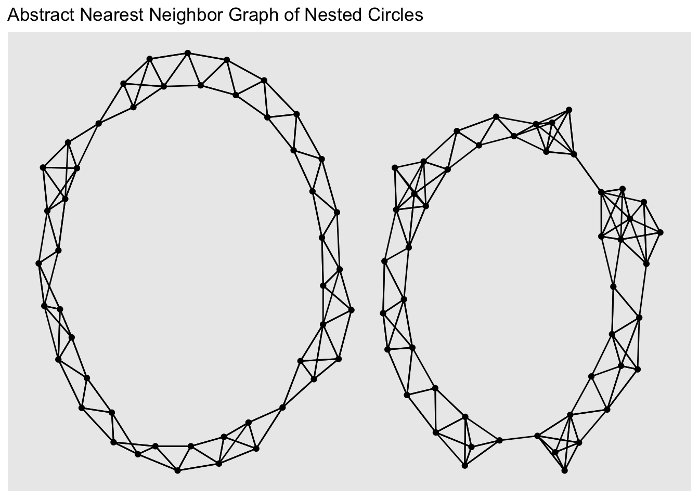
The clustering is evident!
So this idea - embedding points as a nearest neighbor graph - reduces the clustering problem to the “graph cut” problem. Specifically, how can we divide a graph into \(K\) components, while cutting the minimal number of edges? This might seem harder than our original clustering task, but this is a well-studied problem in computer science known as graph partitioning and we can rely on various methods developed for that problem.
Perhaps the most common is a clustering based on taking a decomposition of a certain matrix associated with the graph known as its Laplacian, but many other approaches exist. Because the matrix decomposition is related to an eigendecomposition, the resulting method is known as spectral clustering. Other graph partition methods are technically not spectral, but this whole family of graph-based clustering methods is worth knowing.
One important thing to know about this type of graph-based method is that the graph doesn’t need to actually come from an original Euclidean space. As long as we have some relevant notion of “nearness” we can use to build up a graph, we can apply these methods. This makes graph-based clustering approaches particularly helpful for problems where we need to cluster ‘non-tabular’ data. E.g., we can construct a graph of Wikipedia pages based on link patterns and then ‘cut’ that graph into pieces to determine major topics.

This is not nearly as clean as our little example above, but you can see that meaningful clusters do emerge.
Hierarchical Clustering
Density Based Clustering
One challenge in the clustering methods we have considered so far is that they attempt to cluster every point and hence can be a bit weird when outliers (or just points in low-density parts of the distribution) are present. An alternative clustering philosophy is to find areas of high-density, i.e. modes, in the underlying distribution. Points that lie within these modes are co-clustered and isolated points are not clustered (or are clustered into their own points).
The basic algorithm for density-based clustering, DBSCAN, is finicky in the details, but quite efficient in practice.
- We first identify ‘modal’ points (sometimes called ‘core’ points), defined as points that have \(k\) other points within \(\epsilon\) of them. You can think of this as drawing a circle of radius \(\epsilon\) around each point and then selecting those circles that have \(k\) points in them.
- We then divide the core points into connected components that form the ‘backbone’ of each cluster.
- Now that we have those core points, we find other points that are within \(\epsilon\) of a core point. These tend to live on the periphary of identified core points, but we join them with the ‘core’ cluster they belong go.
- Points that aren’t core or core adjacent are left ‘in the wilderness’ and not assigned to a cluster.
This figure from Wikipedia depicts the process nicely:

The ‘core’ points are in red and each have four points (three neighbors) within each ball. In this case, because the core point ‘balls’ overlap, we only have a single core here. Next, we identify the ‘near core’ points in yellow and they get associated with that cluster. Note that the yellow points couldn’t bridge two clusters: they just give things a little ‘halo’. Finally, the point N in blue doesn’t have any core points in its circle, so it is left solo.
As always, we should think about the behavior of this algorithm as we adjust our tuning parameters:
- \(k\), the number of nearby points needed to be a core point, controls compactness. As \(k\) increases, we get smaller more tightly concentrated clusters.
- \(\epsilon\), the radius of each cluster is a more standard scaling parameter. Larger \(\epsilon\) produces larger clusters and is willing to connect points that are further apart together.
Notice - interestingly - that we do not select the number of clusters directly for this method. Instead, we parameterize what a cluster needs to contain (how many points in how small a space) and that induces some number of clusters in the data.
Let’s go ahead and apply this to our nested circles:
Attaching package: 'dbscan'The following object is masked from 'package:stats':
as.dendrogramnested_circles |>
mutate(cluster = dbscan(as.matrix(pick(x, y)), eps=1.5)$cluster,
noise_point = (cluster == 0),
cluster = if_else(noise_point, "N", LETTERS[na_if(cluster, 0)])) |>
ggplot(aes(x=x, y=y, color=cluster, shape=noise_point)) +
geom_point() +
theme_bw() +
theme(legend.position="bottom",
legend.box="vertical") +
scale_color_brewer(name="Estimated Cluster", type="qual", palette=2) +
scale_shape_discrete(name="Noise Point?") +
ggtitle("DBScan (Moderate Epsilon)")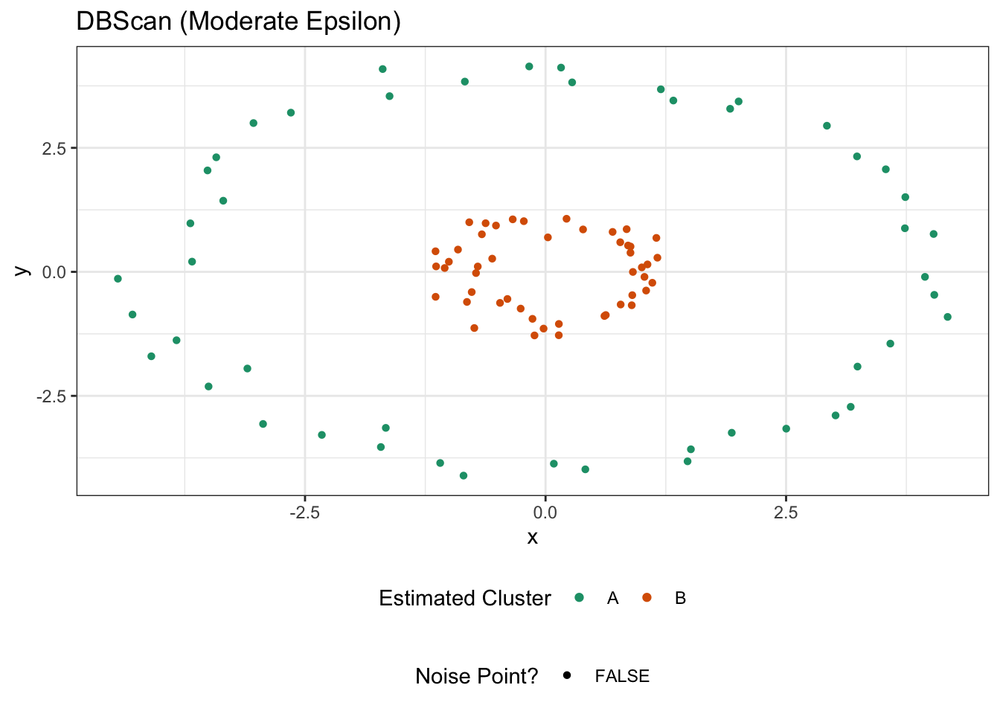
It’s probably no surprise that this does well. If we were to increase epsilon for some reason, we could bridge the clusters:
library(dbscan)
nested_circles |>
mutate(cluster = dbscan(as.matrix(pick(x, y)), eps=2.5)$cluster,
noise_point = (cluster == 0),
cluster = if_else(noise_point, "N", LETTERS[na_if(cluster, 0)])) |>
ggplot(aes(x=x, y=y, color=cluster, shape=noise_point)) +
geom_point() +
theme_bw() +
theme(legend.position="bottom",
legend.box="vertical") +
scale_color_brewer(name="Estimated Cluster", type="qual", palette=2) +
scale_shape_discrete(name="Noise Point?") +
ggtitle("DBScan (High Epsilon - Larger Clusters")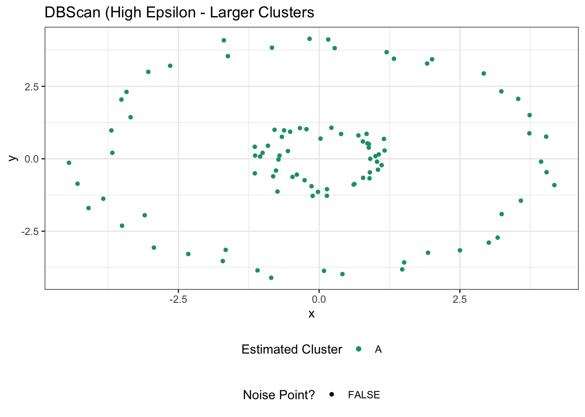
which isn’t great. Going the other way, if we make \(\epsilon\) quite small, we might be able to ‘break’ our circles.
library(dbscan)
nested_circles |>
mutate(cluster = dbscan(as.matrix(pick(x, y)), eps=0.5)$cluster,
noise_point = (cluster == 0),
cluster = if_else(noise_point, "N", LETTERS[na_if(cluster, 0)])) |>
ggplot(aes(x=x, y=y, color=cluster, shape=noise_point)) +
geom_point() +
theme_bw() +
theme(legend.position="bottom",
legend.box="vertical") +
scale_color_brewer(name="Estimated Cluster", type="qual", palette=2) +
scale_shape_discrete(name="Noise Point?") +
ggtitle("DBScan (Low Epsilon - Smaller Clusters, More Noise Points")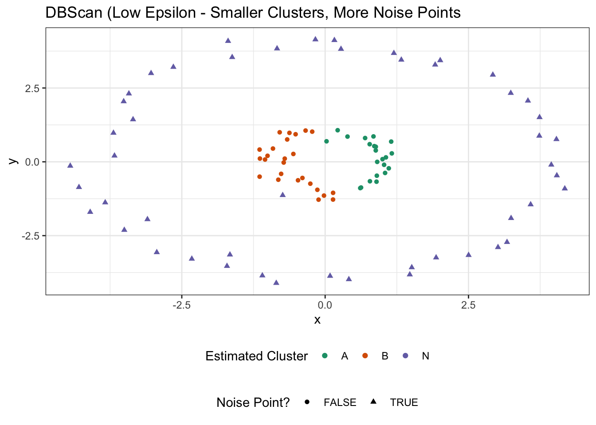
In this case, the colors might suggest two clusters, but we’ve really found only a single cluster and a whole bunch of noise points. If we take \(\epsilon\) even smaller, we can break that inner cluster up:
library(dbscan)
nested_circles |>
mutate(cluster = dbscan(as.matrix(pick(x, y)), eps=0.25)$cluster,
noise_point = (cluster == 0),
cluster = if_else(noise_point, "N", LETTERS[na_if(cluster, 0)])) |>
ggplot(aes(x=x, y=y, color=cluster, shape=noise_point)) +
geom_point() +
theme_bw() +
theme(legend.position="bottom",
legend.box="vertical") +
scale_color_brewer(name="Estimated Cluster", type="qual", palette=2) +
scale_shape_discrete(name="Noise Point?") +
ggtitle("DBScan (Very Small Epsilon)")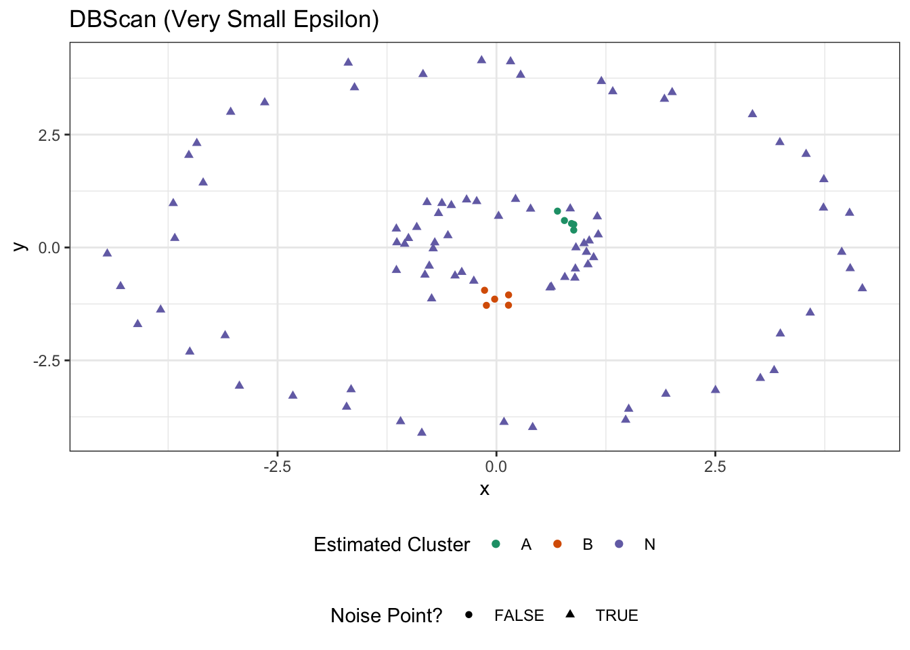
Tuning DBScan is a bit of an art - as it is for all clustering methods at the end of the day - but it has a really nice interaction of spatial interpretability (\(\epsilon, k\)) while also adapting to interesting cluster sizes.
Validation of Cluster Results
Footnotes
You might ask whether it is fair to swap “distance from point A to point B” for “distance from A to the midpoint of A, B”. It turns out that, for Euclidean distance, this is basically fine. You might remember an alternate definition of variance we sometimes use for random variables: \(\E[(X - X')^2] = 2\sigma^2\) where \(X, X'\) are independent samples from a distribution with variance \(\sigma^2\). We’re applying essentially the same argument here.↩︎
D. Arthur and S. Vassilvitskii. “k-means++: the advantages of careful seeding” in SODA ’07: Proceedings of the Eighteenth annual ACM-SIAM Symposium on Discrete Algorithms, pp. 1027-1035 (2007). DOI:10.5555/1283383.1283494.↩︎